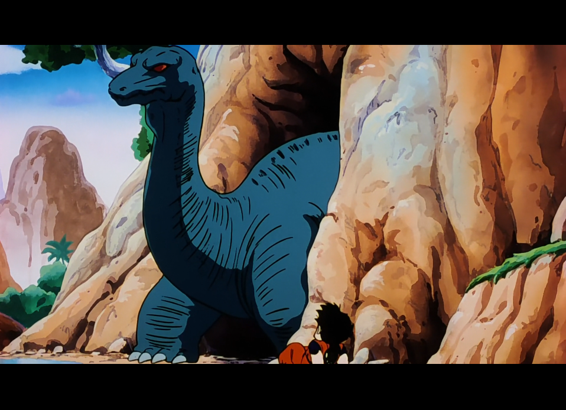

SAGA DES SAIYANS
Épisode 10 : Un compagnon pour Son Gohan - 泣くな悟飯！ はじめての闘い。
Il ne reste plus que onze mois avant l’arrivée des deux redoutables guerriers de l’espace. Au cœur du désert, Son Gohan poursuit son entraînement imposé par Piccolo et y apprend, souvent à ses dépens, que les lois de la nature peuvent se montrer cruelles et impitoyables.
Pendant ce temps, Krilin n’est pas resté inactif : il retrouve son ami Yamcha, et les deux compagnons, conscients de la menace qui plane sur la Terre, décident de partir ensemble s’entraîner auprès du Tout-Puissant afin de se préparer à l’affrontement à venir.

(ci-dessus Son Gohan face à un dinosaure dans le désert)